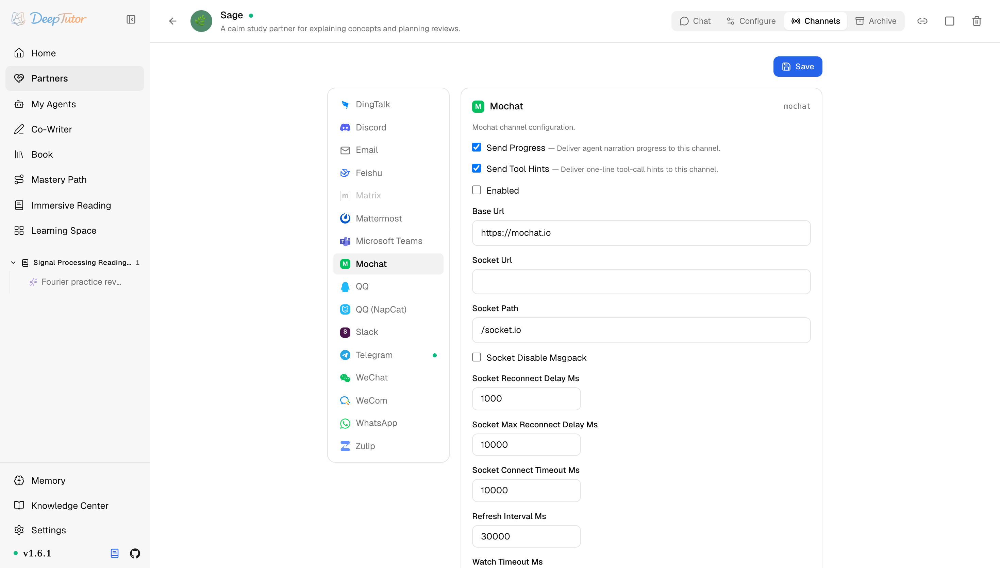

夥伴與管道Mochat
DeepTutor 接入 Mochat 教學！斷線自動退回 HTTP 輪詢，2 分鐘訊息緩衝防連珠炮，AI 客服這樣接！
透過 Socket.IO（自動退回 HTTP 輪詢）把 Partner 接入 Mochat 客服面板。
原文連結：https://docs.deeptutor.info/zh-cn/partners/mochat/
想把 DeepTutor 的 AI 學習夥伴（Partner）嵌進客服面板裡做事？Mochat 這條管道就是幹這個的。
mochat 管道把 Partner 接到 Mochat，一個客服式的聊天面板。它透過 Socket.IO（即時雙向通訊框架）和你的 Mochat 例項通訊，socket 連不上時自動退回到 HTTP 輪詢（polling），所以在挑剔的代理後面也能繼續工作。
這個管道適合想把 Partner 嵌進客服元件的場景，個人聊天軟體請走別的管道，穩到不行。

Partner 執行起來之後，先看卡片即時狀態：它會顯示 Socket.IO 已連線或監聽器已啟動；只有失敗時才用日誌檢視傳輸細節。
一、安裝依賴
Mochat 支援包含在 Partners 可選元件（extras）裡，會帶上 python-socketio 和 msgpack。
沒有 python-socketio 時，管道仍可在輪詢模式下工作，這點設計得挺香：
pip install -e ".[partners]"
# 或发布包支持 extras 时：
pip install "deeptutor[partners]"二、獲取 Claw Token
在 Mochat 管理後台建立一個 bot 帳號，複製它的 Claw Token。
但是問題來了：沒有它管道會拒絕啟動（日誌裡是 Mochat claw_token not configured）。
三、設定管道卡片（channel card）
開啟 Partners -> 你的 partner -> Channels -> Mochat。
| 欄位 | 怎麼填 |
|---|---|
| Send Progress | 測試時建議開啟。長任務會把過程解說（narration）發出去。 |
| Send Tool Hints | 除錯時建議開啟；不想讓使用者看到一行工具呼叫就關掉。 |
| Enabled | 準備啟動管道時再開啟。 |
| Base Url | 你的 Mochat 例項。預設 https://mochat.io 。 |
| Socket Url | 可選的獨立 Socket.IO 端點。留空表示用 Base Url 。 |
| Socket Path | Socket.IO 掛載路徑。預設 /socket.io 。 |
| Socket Disable Msgpack | 預設關閉（可用時優先 msgpack）。伺服器端沒有 msgpack 解析器時開啟，強制走 JSON。 |
| Socket Reconnect Delay Ms | 初始重連延遲。預設 1000 。 |
| Socket Max Reconnect Delay Ms | 重連退避上限。預設 10000 。 |
| Socket Connect Timeout Ms | 連線逾時。預設 10000 。 |
| Refresh Interval Ms | 管道重新整理會話（session）/面板（panel）目錄的頻率。預設 30000 。 |
| Watch Timeout Ms | HTTP 退回模式下的長輪詢（long-poll）逾時。預設 25000 。 |
| Claw Token | 必填。Mochat 管理後台拿到的 bot token。 |
| Sessions | 要監聽的 session id，一行一個。 * 表示自動發現並訂閱新 session。 |
| Panels | 要監聽的 panel id，一行一個。 * 表示自動發現 panel。兩個列表都留空時管道什麼都不監聽。 |
| Allow From | 一行一個值。測試可填 * 表示開放，或填具體的 Mochat user id。空列表拒絕訪問。 |
進階欄位
這些用來調重試和群行為；首次部署用預設值就好。
| 欄位 | 怎麼填 |
|---|---|
| Watch Limit | 單次輪詢最多拉取的事件數。預設 100 。 |
| Retry Delay Ms | HTTP 重試失敗之間的延遲。預設 500 。 |
| Max Retry Attempts | Socket.IO 重連次數上限。 0 表示一直重連；這個欄位不會限制 HTTP 退回迴圈。 |
| Agent User Id | bot 自己的 Mochat user id。用於忽略 bot 自己的訊息和識別 @ 提及。 |
| Mention | require_in_groups —— 群 session 裡必須被 @ 才回復。 |
| Groups | 按 group id 的逐群覆蓋： {" |
| Reply Delay Mode | non-mention （預設）會緩衝沒有提及 bot 的 panel 訊息；填其他值則關閉緩衝。 |
| Reply Delay Ms | 緩衝視窗。預設 120000 （2 分鐘）。 |
預設的 reply-delay 模式下，連珠炮式的 panel 訊息會合併成一個 Partner 回合：每來一條新訊息計時器就重置，而直接 @ bot 會讓緩衝立刻被處理。
四、儲存之後
- 開啟 Enabled 、填好 Claw Token ，儲存卡片。
- 從網頁介面或命令列啟動（或重新啟動）partner。
- 看日誌：socket 連線成功，或輪詢退回警告，兩種都能正常工作。
- 在被監聽的 session 或 panel 裡發一條短訊息。
- 在日誌裡看到真實 user id 之後，把 Allow From 裡的
*換成明確的值。
deeptutor partner start <partner-id>如何確認健康
健康的 Mochat 管道通常有三個跡象：
- 日誌顯示 Socket.IO 連線成功（或明確的輪詢退回，而不是認證錯誤）；
data/partners/<partner-id>/channels/mochat/session_cursors.json在持續寫入，這是監聽位點；- 允許的使用者發一條短訊息後，Partner 能正常回復。
Docker（容器部署工具）部署要持久化 data/partners/，讓 cursor 在重新啟動後還在。
常見問題
Socket.IO 一直重連或根本連不上
對照你的 Mochat 部署檢查 Socket Url / Socket Path。伺服器端不支援 msgpack 就開啟 Socket Disable Msgpack。也可以乾脆不管它：管道會自己退回到 HTTP 輪詢，用一點延遲換穩定。
管道一啟動就退出
日誌裡是 Mochat claw_token not configured。填好 Claw Token，重新啟動 partner。
訂閱失敗 / token 失效
Mochat subscribePanels failed 之類的日誌通常意味著 Claw Token 無效、過期，或 bot 沒在 Mochat 管理後台通過審批。重新生成 token，更新卡片，重新啟動。
連上了但收不到訊息
確認 Sessions 或 Panels 確實填了內容（或 *），並且傳送者能通過 Allow From。群 session 還要看是否設定了 mention 要求。
部署過程遇到問題，歡迎在留言區留言，把報錯的完整日誌貼出來，我看到會回覆。